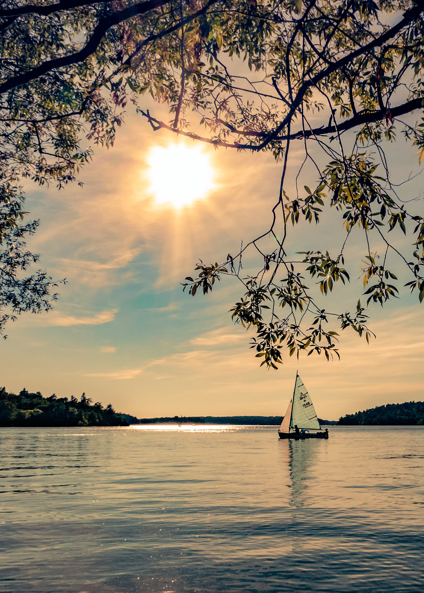
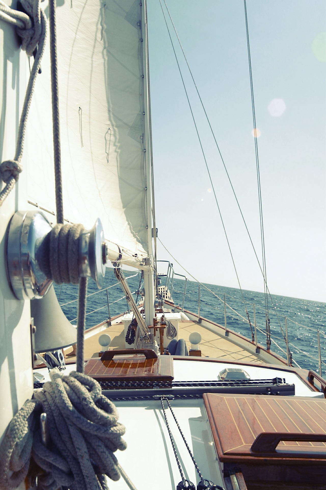
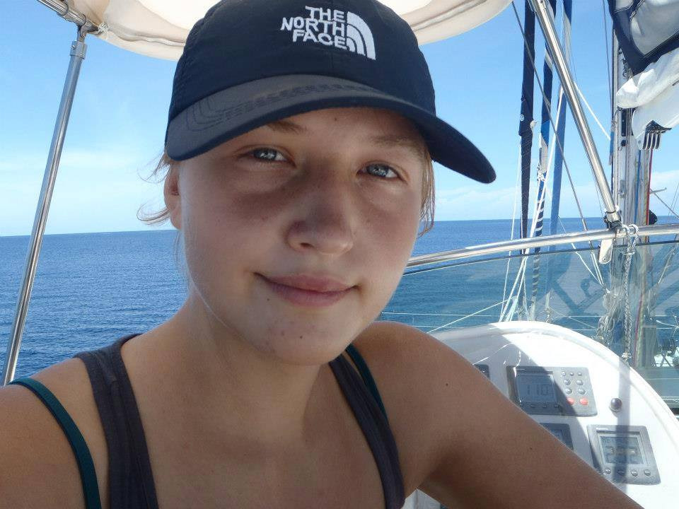

Sailing lessons
Lern how to sail...
or improve your skills.
From beginners to advanced sailors,
everyone can learn to sail or improve their sailing skills on
our courses. Have you ever dreamed of becoming a fully qualified skipper,
learning to be an expert sailor or taking charge of your own yacht?
Sailing school offer you the chance to get the skills and experience needed
to sail anywhere in the world.
Sailing first certificat
w pełni realizuje program Polskiego Związku Żeglarskiego w zakresie wiedzy teoretycznej i praktycznych umiejętności żeglarskich wymagany na tym poziomie uprawnień. Organizujemy go dla tych którzy chcą zdobywać stopnie i państwowe patenty żeglarskie.
Mini kurs żeglarskie abc.
Jeśli chcesz spróbować żeglarstwa,
nie wiesz czy drzemie w tobie potencjał skippera, masz obawy i brak ci przekonania albo wybierasz się na rejs, na którym będziesz płynął w charakterze członka załogi i chcesz wiedzieć jak zachowywać się
na jachcie, umieć wykonać polecenia sternika to zapraszamy na podstawowe szkolenie wprowadzające w arkana żeglarstwa. Do udziału w nim zachęcamy też wszystkich tych, którzy chcą po prostu nauczyć się podstaw żeglarstwa i pływać jachtami do prowadzenia
których nie są wymagane uprawnienia.
Szkolenie uzupełniające
Podnoszące poziom i zakres umiejętności żeglarskich. Dedykowane jest żeglarzom, którzy dawno nie pływali, są świeżo upieczonymi sternikami oraz wszystkim tym, którzy chcą przypomnieć sobie jak się żegluje. Poćwiczyć wybrane manewry, warianty manewrów
lub manewry takie których nie było na kursie.
Rejsy Turystyczne i Szkoleniowe
Kraina Wielkich Jezior Mazurskich
Centralna część Pojezierza
Mazurskiego to kompleks
kilkunastu jezior połączonych systemem kanałów,
położony na unikalnym pod względem walorów
przyrodniczych obszarze, który stanowi wyjątkowy
śródlądowy szlak żeglugowy w Europie.
To piękne miejsce do odpoczynku i świetne
do uprawiania żeglarstwa.
Termin i trase rejsu ustalamy indywidualnie.


Charter
Scandinavia 30Comfort & Safety
Big Lake
Sole Diesel 17 PS engine
bow thruster
teak in cocpit/br>
full sails set (mainsail, jib, code zero)
2 cabins with WC (manual toilet, shower, sink with tap, hot water), kitchen (sink, gas stove, fridge).
furling system for jib & code zero
self-tacking jib system,
Lazy Jack,
TV & Radio,
swimming platform,
Lewmar & Spinlock deck gear,
LED lights inside
Instructor
Natalia Broszkiewicz
Instruktor z pasją i ogromnym doświadczeniem.
Stawia na wysoką jakość szkolenia.
Uczy żeglować w sposób bezpieczny,
ale z zacięciem regatowym.
Przy ognisku świetnie zagra na gitarze.
Sailing certificates:
Instructor IŻ PZŻ
Yacht Captain
Motorboat Captain
